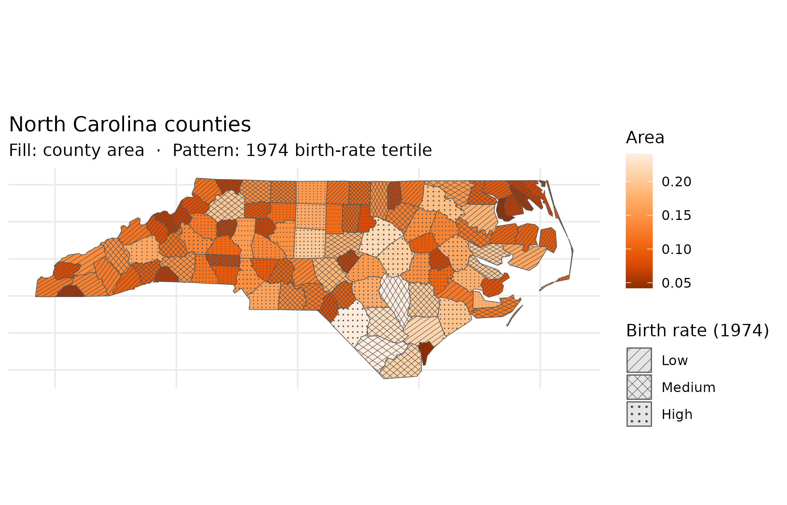
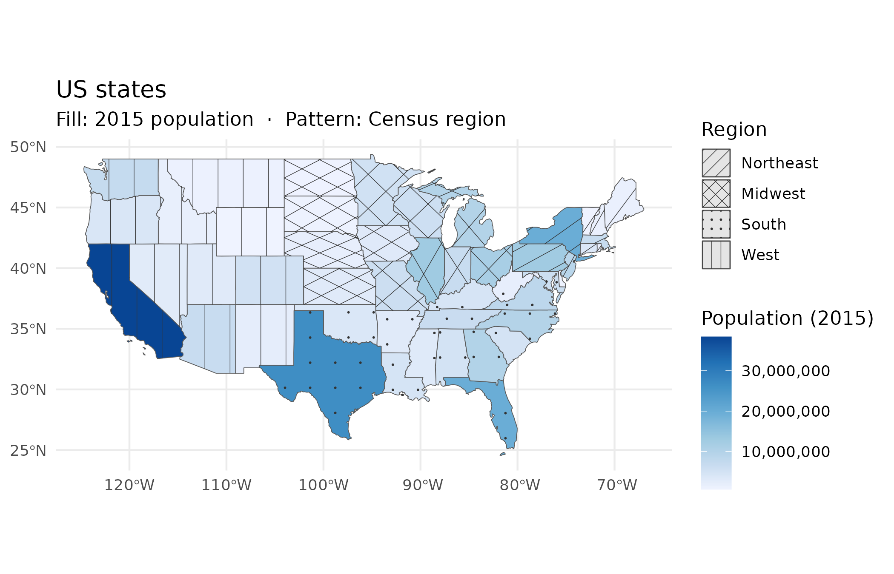

Pattern fill overlays give choropleth maps a second encoding channel that works independently of colour. The result reads correctly in grayscale, in PDF, and for readers with colour-vision deficiency — three contexts where a colour-only map fails.
North Carolina counties
The North Carolina county dataset bundled with the
sf package lets us encode two census variables
simultaneously: county area (AREA, continuous) mapped to
fill colour, and 1974 birth-rate tertile (BIR74, cut into
three equal-count bins) mapped to pattern. Readers can see both
dimensions at once — the pattern distinguishes high-birth-rate counties
regardless of whether they also happen to be large or small.
library(ggplot2)
library(sf)
#> Linking to GEOS 3.12.1, GDAL 3.8.4, PROJ 9.4.0; sf_use_s2() is TRUE
library(ggpatchy)
nc <- st_read(system.file("shape/nc.shp", package = "sf"), quiet = TRUE)
# Quantile-based tertiles give balanced bin sizes across skewed BIR74 data
nc$birth_bin <- cut(
nc$BIR74,
breaks = quantile(nc$BIR74, probs = c(0, 1/3, 2/3, 1)),
include.lowest = TRUE,
labels = c("Low", "Medium", "High")
)
ggplot(nc) +
geom_sf_pattern(
aes(fill = AREA, pattern = birth_bin),
pattern_colour = "grey30",
pattern_linewidth = 0.4,
pattern_spacing = 0.12
) +
scale_pattern_manual(
values = c(Low = "hatch", Medium = "crosshatch", High = "dots"),
name = "Birth rate (1974)"
) +
scale_fill_distiller(palette = "Oranges", name = "Area") +
labs(
title = "North Carolina counties",
subtitle = "Fill: county area · Pattern: 1974 birth-rate tertile"
) +
theme_minimal() +
theme(axis.text = element_blank())
US states
The spData package’s us_states dataset
maps 2015 population (total_pop_15) to fill colour and US
Census region to pattern. Four patterns — one per region — distinguish
Midwest, Northeast, South, and West without adding a second colour
scale. The combination lets readers ask two questions at once: how
populous is this state? (colour) and which region is it
in? (pattern). Both questions are answerable from a black-and-white
printout.
library(spData)
#> To access larger datasets in this package, install the spDataLarge
#> package with: `install.packages('spDataLarge',
#> repos='https://nowosad.github.io/drat/', type='source')`
# Fix a known typo in the REGION factor level
us <- us_states
levels(us$REGION)[levels(us$REGION) == "Norteast"] <- "Northeast"
ggplot(us) +
geom_sf_pattern(
aes(fill = total_pop_15, pattern = REGION),
pattern_colour = "grey20",
pattern_linewidth = 0.45,
pattern_spacing = 0.09
) +
scale_pattern_manual(
values = c(
Midwest = "hatch",
Northeast = "crosshatch",
South = "dots",
West = "vertical"
),
name = "Region"
) +
scale_fill_distiller(
palette = "Blues",
direction = 1,
name = "Population (2015)",
labels = scales::comma
) +
labs(
title = "US states",
subtitle = "Fill: 2015 population · Pattern: Census region"
) +
theme_minimal()